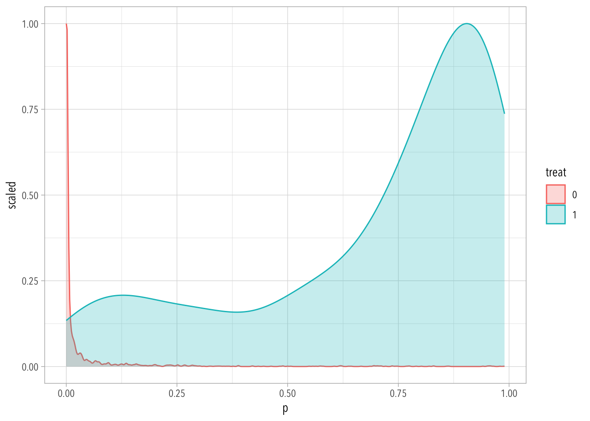
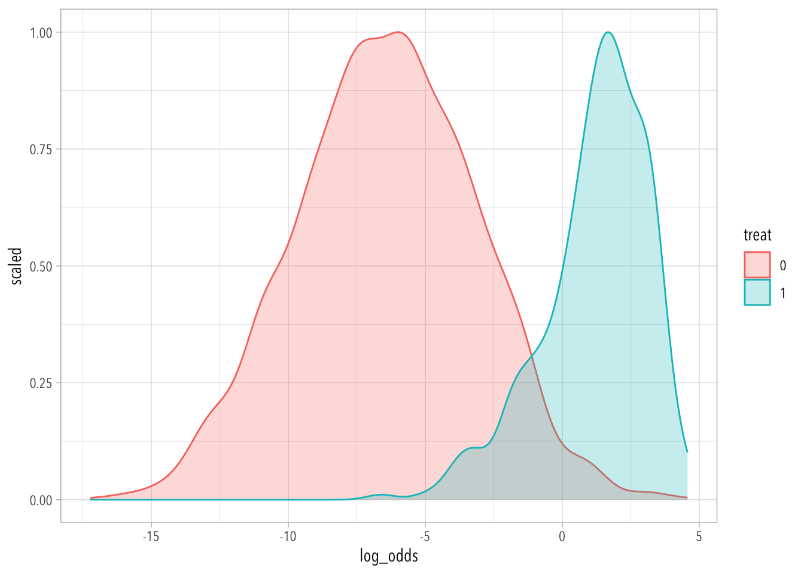
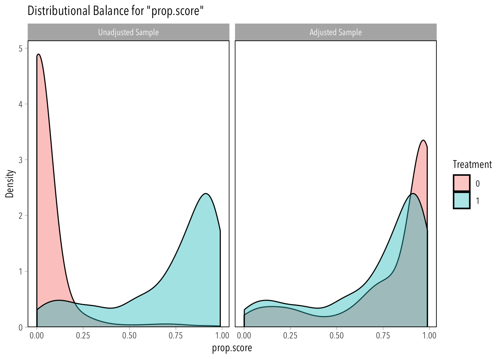
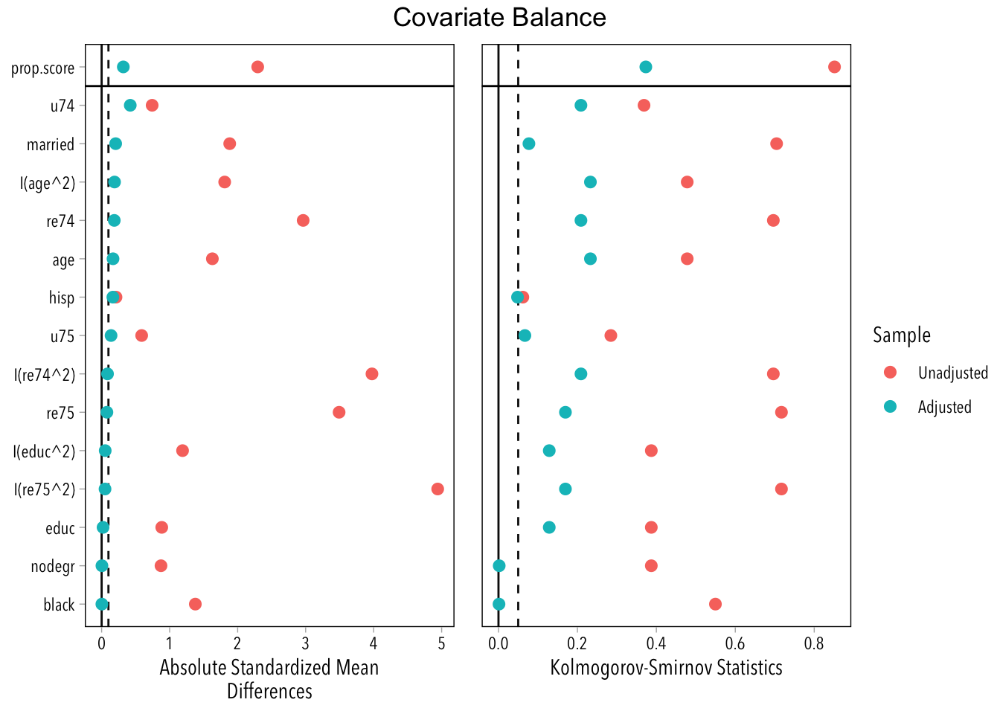

treat ~ black + hisp + married + nodegr + u74 + u75 + age + educ +
re74 + re75 + I(age^2) + I(educ^2) + I(re74^2) + I(re75^2)
17.2 Exercise
Use the experimental data to estimate the effect of the job training treatment. How much does it appear to affect 1978 income? Now look at the observational data (for all exercises from now on). How large is the raw difference in 1978 income between the treatment group and the PSID comparison group?
Since the first part of this question is about the experimental data, we’ll use d_exper (the only time we’ll use it). This will be our “target” interval for the rest of the exercises.
According to the experimental estimate, people who participated in the job training program earned (on average) 886 dollars more than people who didn’t (with a standard error of 472 dollars).
According to the naive estimate on observational data, people who participated in the job training program earned (on average) 16,541 less dollars (with a standard error of 928 dollars).
If we took this seriously, we’d think the training program reduced income by over $16,000! This is because there are a lot of differences between the treated and non-treated cases other than treatment assignment in the observational data.
17.3 Exercise
Try to estimate the effect of the treatment using regression. What does regression say the effect of the program is?
Undoubtedly we could do somewhat better than this specification. The model estimates that the treatment reduces income between $230 and $3,660. This is not very close to the estimate from the experiment!
Note. Take a look at how I added the 95% confidence intervals in the msummary function. This might come in handy in the future.
17.4 Exercise
Begin by exact matching on all the dummy variables. How many treated cases cannot be matched? What is the (FS)ATT estimate?
Exact matching is pretty easy to understand so we start with that. Let’s match on the binary variables and see what we get.
Before that, however, notice that the six binary variables produce are 64 possible groupings, some of will be empty for both treated and untreated groups (e.g.,, the “missing” observations for which both black and hisp are set to 1).
Code
2^6
[1] 64
Exact matching will drop observations for which there isn’t at least one comparison available
Code
groupings <- d |>count(across(all_of(c(cat_vars, "treat")))) |>pivot_wider(values_from = n, names_from = treat, names_prefix ="treat") |>relocate(treat0, treat1)groupings |>filter(is.na(treat0) |is.na(treat1)) |>print(n =Inf)
# A tibble: 16 × 8
treat0 treat1 black hisp married nodegr u74 u75
<int> <int> <int> <int> <int> <int> <dbl> <dbl>
1 8 NA 0 0 0 0 0 1
2 NA 2 0 0 0 1 1 0
3 27 NA 0 0 1 0 0 1
4 22 NA 0 0 1 0 1 0
5 14 NA 0 0 1 1 0 1
6 35 NA 0 0 1 1 1 1
7 1 NA 0 1 0 0 1 0
8 NA 1 0 1 0 1 1 0
9 2 NA 0 1 1 0 0 1
10 1 NA 0 1 1 0 1 1
11 2 NA 0 1 1 1 0 1
12 2 NA 1 0 0 0 0 1
13 NA 2 1 0 0 0 1 0
14 5 NA 1 0 1 0 0 1
15 2 NA 1 0 1 0 1 0
16 NA 5 1 0 1 1 1 0
In this particular case, exact matching will make us lose 10 observations from the treated group and 121 observations from the untreated group.
Note. Exact matching can’t “match” on continuous covariates, and this is the reason why our estimate is so far away from the experimental estimate.
17.5 Exercise
Use the observational data to estimate each case’s propensity to receive treatment using glm(). Use a logistic regression with quadratic terms for age, education, 1974 income, and 1975 income. Spend a few moments thinking about what this model says. Look at the density plots of the p-score for treated and untreated groups.
Code
prob_mod <-glm(f_quadratic, data = d, family ="binomial")d$p <-predict(prob_mod, type ="response")
Note. weightit() can estimate p-scores for us, but we are not going to do this here.
Density Plots:
Code
d |>mutate(treat =as.factor(treat)) |>ggplot(aes(p, fill = treat, color = treat)) +geom_density(aes(p, after_stat(scaled)), alpha =1/4) # set max density of each group to 1 with after_stat

Code
d |>mutate(treat =as.factor(treat)) |>mutate(log_odds =log(p / (1- p))) |>ggplot(aes(log_odds, fill = treat, color = treat)) +geom_density(aes(log_odds, after_stat(scaled)), alpha =1/4)

This second graph is easier to read. It shows how different the treatment and control groups are in their pre-treatment characteristics (balance). However, it is worth noting that there’s not a clear lack of common support; the range of both groups is pretty extensive.
17.6 Exercise
Estimate propensity scores and ATT weights using weightit(). Ignore the warning you get. We’ll discuss that more in class. Estimate the ATT. Check for covariate balance.
Code
ps_out <-weightit(f_quadratic, data = d, method ="glm", estimand ="ATT")
Warning: Some extreme weights were generated. Examine them with `summary()` and
maybe trim them with `trim()`.
Code
summary(ps_out)
Summary of weights
- Weight ranges:
Min Max
treated 1 || 1.0000
control 0 |---------------------------| 83.9742
- Units with the 5 most extreme weights by group:
2218 2217 2216 2215 2214
treated 1 1 1 1 1
1485 1484 1478 56 1521
control 22.7435 22.7435 27.3148 48.3254 83.9742
- Weight statistics:
Coef of Var MAD Entropy # Zeros
treated 0.000 0.000 -0.000 0
control 12.211 1.732 3.841 0
- Effective Sample Sizes:
Control Treated
Unweighted 2213. 297
Weighted 14.75 297
This estimate looks much better. It may be a little more positive than the experimental estimate, but it overlaps a good deal with it.
Remember that the standard errors are underestimated, so we might have to bootstrap the results if we want a reasonable confidence interval.
Now let’s check for covariate balance.
Note. You should check for covariate balance BEFORE estimating the ATT.
Code
bal.plot( ps_out,which ="both", var.name ="prop.score", type ="density")

The balance looks OK-ish for the propensity scores.
Now let’s check for the covariates.
Code
love_plot(ps_out)

It’s not that great when we use K-S distance to compare the distributions, isn’t? If this was the early 2000s, we could go ahead and publish the ATT estimated earlier. But we live in the future now…
17.7 Exercise
Now do the same as above using “entropy balancing.” Confirm that you’ve achieved balance on the means and the variances of the covariates. Then estimate the ATT.
## this package will allow you to use the replicate function in "parallel"## this will make things run much faster, depending on the number of "cores" ## in your computer.library(future.apply)plan(multisession, workers = parallel::detectCores() -1L)get_att <-function() { i <-sample(nrow(d), replace =TRUE) ps_out <-weightit(f_quadratic, data = d[i, ], method ="glm", estimand ="ATT") ps_mod <-lm(re78 ~ treat, data = d[i, ], weights = ps_out$weights) out <-coefficients(ps_mod)return(out[["treat"]])}boot <-future_replicate(1e4, suppressWarnings(get_att()))## previous standard errortidy(ps_mod) |>filter(term =="treat")
---title: "Solutions 7"---```{r}#| code-summary: Packages and Helper Functions#| message: false# Packages ---library(tidyverse)library(modelsummary)library(broom)## Noah Greifer packageslibrary(cobalt)library(MatchIt)library(WeightIt)# Extra ---theme_set(theme_light(base_family ="Avenir Next Condensed"))love_plot <-function(x) { cobalt::love.plot(x, binary ="std" ,stats =c("m", "ks") ,thresholds =c(.1, .05),var.order ="adjusted",abs =TRUE )}msummary <-function(...) { modelsummary::msummary(..., output ="gt") |> gt::opt_table_font(font ="Optima") |> gt::tab_options(quarto.disable_processing =TRUE)}```## Instructions**Data**```{r}load("data/exercise_data.Rdata")```**Formulas**```{r}cat_vars <-c("black", "hisp", "married", "nodegr", "u74", "u75")num_vars <-c("age", "educ", "re74", "re75")# treatment equation (binary preds only)f_cat_only <-reformulate(termlabels = cat_vars, response ="treat")f_cat_only# treatment equation (linear specification)f_linear <-reformulate(termlabels =c(num_vars, cat_vars), response ="treat")f_linear# treatment equation (quadratics for numeric variables)f_quadratic <-reformulate(termlabels =c(cat_vars, num_vars, str_glue("I({num_vars}^2)")),response ="treat")f_quadratic```## Exercise*Use the experimental data to estimate the effect of the job training treatment. How much does it appear to affect 1978 income? Now look at the observational data (for all exercises from now on). How large is the raw difference in 1978 income between the treatment group and the PSID comparison group?*> Since the first part of this question is about the experimental data, we'll use `d_exper` (the only time we'll use it). This will be our "target" interval for the rest of the exercises.```{r}naive_exper <-lm(re78 ~ treat, data = d_exper)naive_obser <-lm(re78 ~ treat, data = d)msummary(models =list("Experimental"= naive_exper, "Observational"= naive_obser), coef_map ="treat",gof_map =c("nobs", "rmse"))```According to the experimental estimate, people who participated in the job training program earned (on average) 886 dollars *more* than people who didn't (with a standard error of 472 dollars).According to the naive estimate on observational data, people who participated in the job training program earned (on average) 16,541 *less* dollars (with a standard error of 928 dollars).> If we took this seriously, we'd think the training program *reduced* income by over \$16,000! This is because there are *a lot* of differences between the treated and non-treated cases *other* than treatment assignment in the observational data.## Exercise*Try to estimate the effect of the treatment using regression. What does regression say the effect of the program is?*```{r}regression_formula <-reformulate(termlabels =c("treat", cat_vars, num_vars, str_glue("I({num_vars}^2)")), response ="re78")regression_formulareg_mod <-lm(regression_formula, data = d)msummary(models =list(Regression = reg_mod, "Experimental"= naive_exper), estimate ="{estimate} [{conf.low}, {conf.high}]",coef_map ="treat",gof_map =c("nobs", "rmse"))```> Undoubtedly we could do somewhat better than this specification. The model estimates that the treatment *reduces* income between \$230 and \$3,660. This is not very close to the estimate from the experiment!*Note. Take a look at how I added the 95% confidence intervals in the `msummary` function. This might come in handy in the future*.## Exercise*Begin by exact matching on all the dummy variables. How many treated cases cannot be matched? What is the (FS)ATT estimate?*> Exact matching is pretty easy to understand so we start with that. Let's match on the binary variables and see what we get.Before that, however, notice that the six binary variables produce are 64 possible groupings, some of will be empty for both treated and untreated groups (e.g.,, the "missing" observations for which both `black` and `hisp` are set to 1).```{r}2^6```Exact matching will drop observations for which there isn't at least one comparison available```{r}groupings <- d |>count(across(all_of(c(cat_vars, "treat")))) |>pivot_wider(values_from = n, names_from = treat, names_prefix ="treat") |>relocate(treat0, treat1)groupings |>filter(is.na(treat0) |is.na(treat1)) |>print(n =Inf)```In this particular case, exact matching will make us lose 10 observations from the treated group and 121 observations from the untreated group.```{r}groupings |>filter(is.na(treat0) |is.na(treat1)) |>summarize(across(c(treat0, treat1), \(x) sum(x, na.rm =TRUE)))```Thus, given that we lose 10 of our treatment cases, we are going to be estimating a *feasible ATT* on this sample (FSATT).```{r}exact_out <-matchit(f_cat_only, data = d, estimand ="ATT", method ="exact")exact_out```*Note. `exact_out$weights` gives dropped observations a "weight" of zero; all the other observations get a weight of one.*```{r}exact_mod <-lm(re78 ~ treat, data = d, weights = exact_out$weights) msummary(models =list("Exact Matching"= exact_mod, "Experimental"= naive_exper), coef_map ="treat",gof_map =c("nobs", "rmse"))```*Note. Exact matching can't "match" on continuous covariates, and this is the reason why our estimate is so far away from the experimental estimate.*## Exercise*Use the observational data to estimate each case’s propensity to receive treatment using `glm()`. Use a logistic regression with quadratic terms for age, education, 1974 income, and 1975 income. Spend a few moments thinking about what this model says. Look at the density plots of the p-score for treated and untreated groups.*```{r}prob_mod <-glm(f_quadratic, data = d, family ="binomial")d$p <-predict(prob_mod, type ="response")```*Note. `weightit()` can estimate p-scores for us, but we are not going to do this here.*Density Plots:```{r}d |>mutate(treat =as.factor(treat)) |>ggplot(aes(p, fill = treat, color = treat)) +geom_density(aes(p, after_stat(scaled)), alpha =1/4) # set max density of each group to 1 with after_statd |>mutate(treat =as.factor(treat)) |>mutate(log_odds =log(p / (1- p))) |>ggplot(aes(log_odds, fill = treat, color = treat)) +geom_density(aes(log_odds, after_stat(scaled)), alpha =1/4) ```This second graph is easier to read. It shows how different the treatment and control groups are in their pre-treatment characteristics (balance). However, it is worth noting that there’s not a clear lack of common support; the range of both groups is pretty extensive.## Exercise*Estimate propensity scores and ATT weights using weightit(). Ignore the warning you get. We’ll discuss that more in class. Estimate the ATT. Check for covariate balance.*```{r}ps_out <-weightit(f_quadratic, data = d, method ="glm", estimand ="ATT")summary(ps_out)ps_mod <-lm(re78 ~ treat, data = d, weights = ps_out$weights)msummary(models =list("Propensity Score Weighting"= ps_mod, "Experimental"= naive_exper), coef_map ="treat",gof_map =c("nobs", "rmse"))```This estimate looks much better. It may be a little more positive than the experimental estimate, but it overlaps a good deal with it.Remember that the standard errors are underestimated, so we might have to bootstrap the results if we want a reasonable confidence interval.Now let's check for covariate balance.*Note. You should check for covariate balance BEFORE estimating the ATT*.```{r}bal.plot( ps_out,which ="both", var.name ="prop.score", type ="density")```The balance looks OK-ish for the propensity scores.Now let's check for the covariates.```{r}love_plot(ps_out)```It’s not that great when we use K-S distance to compare the distributions, isn't? If this was the early 2000s, we could go ahead and publish the ATT estimated earlier. But we live in the future now...## Exercise*Now do the same as above using “entropy balancing.” Confirm that you’ve achieved balance on the means and the variances of the covariates. Then estimate the ATT.*```{r}ebal_out <-weightit(formula = f_linear, data = d,method ="ebal",moments =3,estimand ="ATT",maxit =1e5)summary(ebal_out)love_plot(ebal_out)ebal_mod <-lm(re78 ~ treat, data = d, weights = ebal_out$weights)msummary(models =list("Entropy Balancing"= ebal_mod, "Experimental"= naive_exper), coef_map ="treat",gof_map =c("nobs", "rmse"))```## Bonus```{r}#| message: false## this package will allow you to use the replicate function in "parallel"## this will make things run much faster, depending on the number of "cores" ## in your computer.library(future.apply)plan(multisession, workers = parallel::detectCores() -1L)get_att <-function() { i <-sample(nrow(d), replace =TRUE) ps_out <-weightit(f_quadratic, data = d[i, ], method ="glm", estimand ="ATT") ps_mod <-lm(re78 ~ treat, data = d[i, ], weights = ps_out$weights) out <-coefficients(ps_mod)return(out[["treat"]])}boot <-future_replicate(1e4, suppressWarnings(get_att()))## previous standard errortidy(ps_mod) |>filter(term =="treat")## new standard errorsd(boot)```